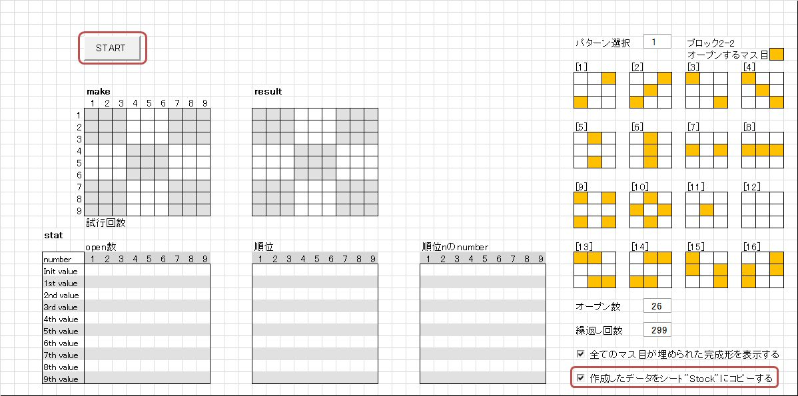
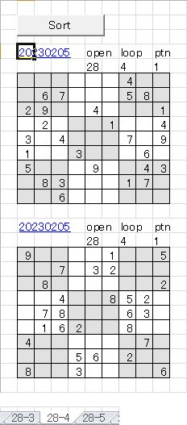

｢数独問題作成ツール｣ アップデート
このツールで作成した問題を記録するロジックを追加しました。
せっかく作ったデータですから、面白そうなデータは簡単に記録できるようにしたいと思いました。
このツールを初めてお使いになる方は、
suudoku_doc
をご一読下さい。レイアウトに若干の変更がありますが、
このツールの概要を理解して頂けると思います。
アップデートの概要は以下の通りです。
-
このツールのファイル名を｢z.suudoku_02.xlsm｣から｢z.suudoku_03.xlsm｣に更新しました。
z.suudoku_02.xlsmをお使いの場合は、今後必要なくなります。新しいz.suudoku_03.xlsmをお使い下さい。 -
- データ作成シート｢Make｣にデータを記録するか否か促すチェックボックスを追加しました。
-
予めオープンするマス目のパターンを指定するブロック2-2に
[13]から[16]のパターンを追加しました。

-
作成したデータを一時的に格納する｢Stock｣シートを新規追加しました。
-
作成したデータの中で残したいものを格納していくために、suudoku_dat.xlsm(以下suudoku_datと略記)を新規追加しました。
問題作成の流れに沿って簡単に説明します
-
エクスプローラーから｢z.suudoku_03.xlsm｣を開きます。
[Make]シートの右下の｢作成したデータをシート"Stock"にコピーする｣にチェックが入っていることを確認します。
-
｢Start｣ボタンを押します。
しばらくすると、｢Congratulations!｣というメッセージボックが表示されます。問題の作成に成功しました！
-
｢Stock｣シートタブをクリックします。

作成されたデータが表示されています。
データのヘッダーに○印がついています。
データが複数表示されている場合は、記録する必要のないデータの○印を消します(1つしかない場合は○印は消さないで下さい)。
(私見ですが、残すデータは繰返し回数(loopの下の数です)の少ないデータにするのが吉です)
｢Select｣ボタンを押すと○印のついたデータだけが残ります。

-
｢Translate｣ボタンを押します。
しばらくすると、データが消えてしまいます。でも、大丈夫です。ディスプレイの下に表示されているタスクバーのエクセルのアイコンにカーソルを合わせると(①)、
｢suudoku_dat.xlxm｣のポップアップが出て来るのでクリックします(②)。最初に[log]シートが表示されますが、 先ほど○印をつけたデータのヘッダー情報がリンク付きで、格納した日付の後に並んでいます。

リンクをクリックすると、データが格納されているシートの当該データが表示されます。
このように作成した問題は、｢オープン数｣と｢解くための繰返し回数｣で名前付けられたシートに蓄えられて行きます。
-
1.から4.の操作を繰り返すと、データが格納されているシートのデータ数が増えてきます。
各シートにはオープン数が同一で、難易度が同じと考えられるデータが記録されています。
｢Sort｣ボタンを押すとパターン(※)毎にデータを並び替え、オリジナルデータが表示されているブロックの下に表示されます。
(元々時系列で表示されているオリジナルデータは変更はありません)
※パターンは1.の右上に表示されている3x3の真ん中のブロックで、予めナンバーがオープンされるマス目のパターンです。
ダウンロード
このツールを使用するにあたって
- このツールの無断転載を一切禁止します。
-
ロジックの改善、改良をお考えの場合は、ご連絡頂ければソースコードをお送り致します。
ロジックの改造でオープン数で22, 21に成功した場合、御一報頂けるとうれしいです。
併せて、そのロジックも教えて頂けることを期待します。
z.suudoku_03.zip をクリックして、ダウンロードして下さい。